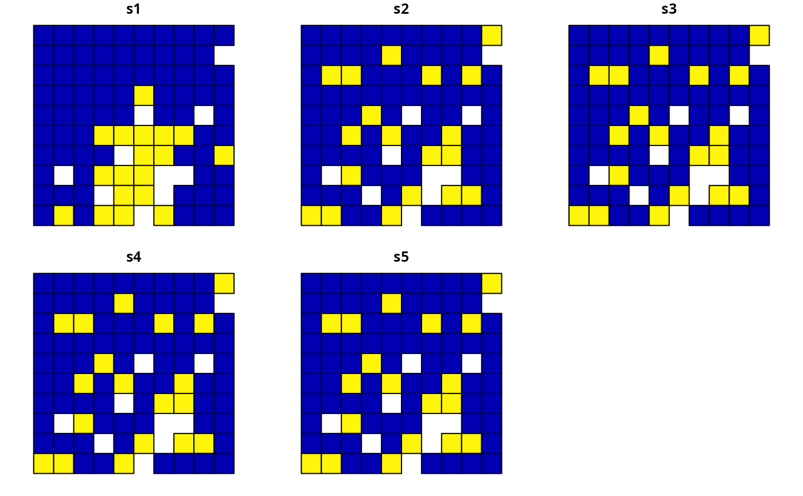
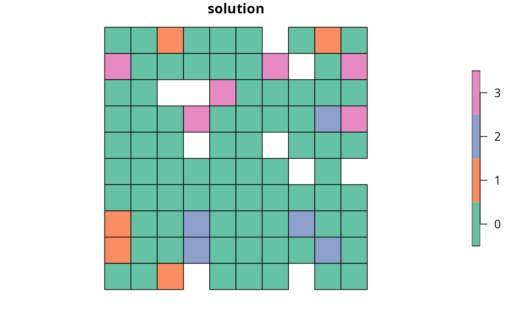
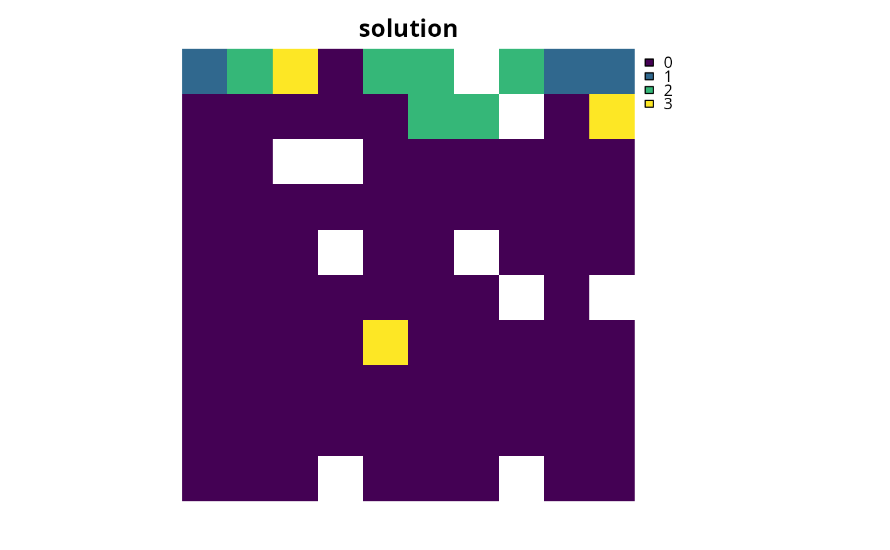

Add constraints to a conservation planning problem() to ensure
that specific planning units are selected (or allocated
to a specific zone) in the solution. For example, it may be desirable to
lock in planning units that are inside existing protected areas so that the
solution fills in the gaps in the existing reserve network. If specific
planning units should be locked out of a solution, use
add_locked_out_constraints(). For problems with non-binary
planning unit allocations (e.g. proportions), the
add_manual_locked_constraints() function can be used to lock
planning unit allocations to a specific value.
add_locked_in_constraints(x, locked_in)
# S4 method for ConservationProblem,numeric
add_locked_in_constraints(x, locked_in)
# S4 method for ConservationProblem,logical
add_locked_in_constraints(x, locked_in)
# S4 method for ConservationProblem,matrix
add_locked_in_constraints(x, locked_in)
# S4 method for ConservationProblem,character
add_locked_in_constraints(x, locked_in)
# S4 method for ConservationProblem,Spatial
add_locked_in_constraints(x, locked_in)
# S4 method for ConservationProblem,sf
add_locked_in_constraints(x, locked_in)
# S4 method for ConservationProblem,Raster
add_locked_in_constraints(x, locked_in)Arguments
| x |
|
|---|---|
| locked_in | Object that determines which planning units that should be locked in. See the Data format section for more information. |
Value
Object (i.e. ConservationProblem) with the constraints
added to it.
Data format
The locked planning units can be specified using the following formats.
Generally, the locked data should correspond to the planning units
in the argument to x. To help make working with
Raster planning unit data easier,
the locked data should correspond to cell indices in the
Raster data. For example, integer arguments
should correspond to cell indices and logical arguments should have
a value for each cell---regardless of which planning unit cells contain
NA values.
integervectorof indices pertaining to which planning units should be locked for the solution. This argument is only compatible with problems that contain a single zone.logicalvectorcontainingTRUEand/orFALSEvalues that indicate which planning units should be locked in the solution. This argument is only compatible with problems that contain a single zone.matrixcontaining
logicalTRUEand/orFALSEvalues which indicate if certain planning units are should be locked to a specific zone in the solution. Each row corresponds to a planning unit, each column corresponds to a zone, and each cell indicates if the planning unit should be locked to a given zone. Thus each row should only contain at most a singleTRUEvalue.characterfield (column) name(s) that indicate if planning units should be locked for the solution. This type of argument is only compatible if the planning units in the argument to
xare aSpatial,sf::sf(), ordata.frameobject. The fields (columns) must havelogical(i.e.TRUEorFALSE) values indicating if the planning unit is to be locked for the solution. For problems containing multiple zones, this argument should contain a field (column) name for each management zone.Spatialorsf::sf()planning units in
xthat spatially intersect with the argument toy(according tointersecting_units()are locked for to the solution. Note that this option is only available for problems that contain a single management zone.Rasterplanning units in
xthat intersect with non-zero and non-NAraster cells are locked for the solution. For problems that contain multiple zones, theRasterobject must contain a layer for each zone. Note that for multi-band arguments, each pixel must only contain a non-zero value in a single band. Additionally, if the cost data inxis aRasterobject, we recommend standardizingNAvalues in this dataset with the cost data. In other words, the pixels inxthat haveNAvalues should also haveNAvalues in the locked data.
See also
Examples
# set seed for reproducibility
set.seed(500)
# load data
data(sim_pu_polygons, sim_features, sim_locked_in_raster)
# create minimal problem
p1 <- problem(sim_pu_polygons, sim_features, "cost") %>%
add_min_set_objective() %>%
add_relative_targets(0.2) %>%
add_binary_decisions() %>%
add_default_solver(verbose = FALSE)
# create problem with added locked in constraints using integers
p2 <- p1 %>% add_locked_in_constraints(which(sim_pu_polygons$locked_in))
# create problem with added locked in constraints using a field name
p3 <- p1 %>% add_locked_in_constraints("locked_in")
# create problem with added locked in constraints using raster data
p4 <- p1 %>% add_locked_in_constraints(sim_locked_in_raster)
# create problem with added locked in constraints using spatial polygon data
locked_in <- sim_pu_polygons[sim_pu_polygons$locked_in == 1, ]
p5 <- p1 %>% add_locked_in_constraints(locked_in)
# \dontrun{
# solve problems
s1 <- solve(p1)
s2 <- solve(p2)
s3 <- solve(p3)
s4 <- solve(p4)
s5 <- solve(p5)
# plot solutions
par(mfrow = c(3, 2), mar = c(0, 0, 4.1, 0))
plot(s1, main = "none locked in")
plot(s1[s1$solution_1 == 1, ], col = "darkgreen", add = TRUE)
plot(s2, main = "locked in (integer input)")
plot(s2[s2$solution_1 == 1, ], col = "darkgreen", add = TRUE)
plot(s3, main = "locked in (character input)")
plot(s3[s3$solution_1 == 1, ], col = "darkgreen", add = TRUE)
plot(s4, main = "locked in (raster input)")
plot(s4[s4$solution_1 == 1, ], col = "darkgreen", add = TRUE)
plot(s5, main = "locked in (polygon input)")
plot(s5[s5$solution_1 == 1, ], col = "darkgreen", add = TRUE)
# reset plot
par(mfrow = c(1, 1))

# }
# create minimal multi-zone problem with spatial data
p6 <- problem(sim_pu_zones_polygons, sim_features_zones,
cost_column = c("cost_1", "cost_2", "cost_3")) %>%
add_min_set_objective() %>%
add_absolute_targets(matrix(rpois(15, 1), nrow = 5,
ncol = 3)) %>%
add_binary_decisions() %>%
add_default_solver(verbose = FALSE)
# create multi-zone problem with locked in constraints using matrix data
locked_matrix <- sim_pu_zones_polygons@data[, c("locked_1", "locked_2",
"locked_3")]
locked_matrix <- as.matrix(locked_matrix)
p7 <- p6 %>% add_locked_in_constraints(locked_matrix)
# \dontrun{
# solve problem
s6 <- solve(p6)
# create new column representing the zone id that each planning unit
# was allocated to in the solution
s6$solution <- category_vector(s6@data[, c("solution_1_zone_1",
"solution_1_zone_2",
"solution_1_zone_3")])
s6$solution <- factor(s6$solution)
# plot solution
spplot(s6, zcol = "solution", main = "solution", axes = FALSE, box = FALSE)

# }
# create multi-zone problem with locked in constraints using field names
p8 <- p6 %>% add_locked_in_constraints(c("locked_1", "locked_2", "locked_3"))
# \dontrun{
# solve problem
s8 <- solve(p8)
# create new column representing the zone id that each planning unit
# was allocated to in the solution
s8$solution <- category_vector(s8@data[, c("solution_1_zone_1",
"solution_1_zone_2",
"solution_1_zone_3")])
s8$solution[s8$solution == 1 & s8$solution_1_zone_1 == 0] <- 0
s8$solution <- factor(s8$solution)
# plot solution
spplot(s8, zcol = "solution", main = "solution", axes = FALSE, box = FALSE)
# }
# create multi-zone problem with raster planning units
p9 <- problem(sim_pu_zones_stack, sim_features_zones) %>%
add_min_set_objective() %>%
add_absolute_targets(matrix(rpois(15, 1), nrow = 5, ncol = 3)) %>%
add_binary_decisions() %>%
add_default_solver(verbose = FALSE)
# create raster stack with locked in units
locked_in_stack <- sim_pu_zones_stack[[1]]
locked_in_stack[!is.na(locked_in_stack)] <- 0
locked_in_stack <- locked_in_stack[[c(1, 1, 1)]]
locked_in_stack[[1]][1] <- 1
locked_in_stack[[2]][2] <- 1
locked_in_stack[[3]][3] <- 1
# plot locked in stack
# \dontrun{
plot(locked_in_stack)

# }
# add locked in raster units to problem
p9 <- p9 %>% add_locked_in_constraints(locked_in_stack)
# \dontrun{
# solve problem
s9 <- solve(p9)
# plot solution
plot(category_layer(s9), main = "solution", axes = FALSE, box = FALSE)
 # }
# }